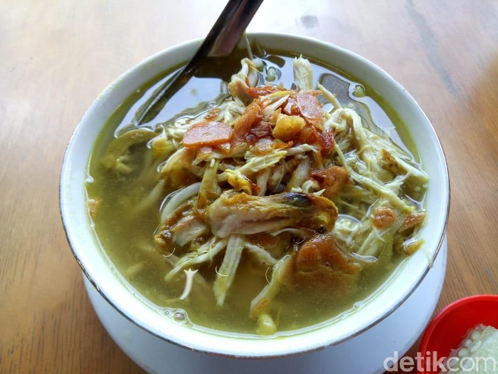

SOTO KEMIRI

(source : https://1.bp.blogspot.com/-fFKYgHdEsIY/XV9OuWKnzLI/AAAAAAAAAqo/mAgr95DzZUEHFTfW0X5Bj5xdJHTsGBJeACLcBGAs/s1600/Soto.jpeg)
A. Sejarah Soto Kemiri
Soto Kemiri merupakan masakan soto khas kota Pati, Jawa Tengah. Soto kemiri merupakan
kuliner yang melegenda. Ada sejarah yang unik tentang soto ini.
Konon, pada zaman dulu banyak warga yang tidak sanggup membeli ayam atau daging sebagai
bahan dasar pembuatan soto, maka masyarakat memakai bumbu kemiri sebagai penggantinya.
Dan memang sajian Soto Kemiri ini minimalis. Semangkuk nasi yang diisi dengan kecambah atau
tauge, seledri, bawang goreng dan sedikit suwiran ayam yang disiram dengan kuah soto santan
encer, berbumbu kemiri dan berwarna kuning kunyit. Tapi soal rasa, jangan ditanya deh.
Meskipun minimalis, tetap lezat rasanya, karena aroma rempah-rempahnya sangat kentara.
Gambaran rasanya adalah asin, manis, gurih. Manis dari soto berasal dari siraman kecap manis asli
Pati yang terkenal enak.
Ada pula sejarah yang menyebutkan, Soto Kemiri berasal dari dukuh Kemiri, Desa Sarirejo
Kabupaten Pati, yang dulunya merupakan hutan rempah-rempah Kemiri.
Karena itulah disebut Soto Kemiri. Dan memang kebanyakan penjual Soto Kemiri awalnya
berasal dari dukuh tersebut, yang menjual dagangan di sepanjang Jalan Kembang Joyo
sekitar dukuh Kemiri.
Soto Kemiri menjadi menu andalan untuk para pekerja dan petani di Pati pada jaman itu.
Karena di samping murah, juga sangat lezat. Soto Kemiri telah menjadi menu favorit berbagai
kalangan, karena kelezatannya. Dan sudah memakai ayam kampung sebagai bahan dasarnya,
sehingga Soto Kemiri memiliki cita rasa khas yang lebih sedap.
Soto Kemiri memiliki keunikan pada saat penyajian. Nasi diberi kuah, beberapa kali kuahnya
dikembalikan lagi dalam kuali tempat kuah, kemudian, baru mangkuk nasi dituang kuah kembali
sebagai proses terakhir hingga nasi menjadi hangat. Alasan dari penjualnya saat saya tanyakan
mengapa begitu, adalah biar bumbu meresap dalam nasi dan nasinya menjadi hangat.
Dan memang iya, bumbu meresap dalam nasi, tapi, mungkin juga karena kebiasaan dari penjual,
yang terjaga secara turun menurun dan menjadi ciri khas dari tata cara menyajikan Soto Kemiri ini.
Harga yang dibandrol dalam setiap mangkuk Soto Kemiri tak mahal dan terjangkau.
Hanya empat ribu hingga lima ribu rupiah per mangkuk. Ayam ungkep sebagai sajian tambahan,
seharga antara tiga ribu sampai delapan ribu rupiah. Tetapi tentu saja ayam ungkep sangat kecil
ukurannya. Jika kita menyantapnya, mungkin butuh beberapa potong ayam untuk menuntaskan
kepuasan rasa kuliner soto ini. Ayam ungkep yang berukuran minimalis karena menggunakan
ayam kampung yang masih muda. Sehingga membutuhkan beberapa potong ayam untuk bisa
menuntaskan kepuasan kuliner Soto Kemiri. Ayam ungkep yang berukuran minimalis karena
menggunakan ayam kampung yang masih muda. Sehingga membutuhkan beberapa potong ayam
untuk bisamenuntaskan kepuasan kuliner Soto Kemiri.
Untuk sekarang ini, Soto Kemiri telah menyebar ke berbagai tempat di kota Pati,
meski ada yang masih bertahan di Jalan Kembang Joyo seperti "Soto Kemiri Pak Lasdi".
Ada juga yang berjualan di Jalan Kyai Saleh kota Pati, "Soto Kemiri Pak Kribo" yang terkenal
karena lezat dan khas juga laris.
Cara Membuat Soto Kemiri
Bahan Utama :
- 1 ekor ayam
- 2 lembar daun salam
- 1 sendok makan garam
- ½ sendok makan gula pasir
- 500 ml santan, dari ½ butir kelapa
- 2 sendok makan minyak untuk menumis
Bahan Bumbu Halus :
- 12 butir bawang merah
- 5 siung bawang putih
- 8 butir kemiri, sangrai
- 3 cm kencur
- 2 cm kunyit, bakar
Bahan Pelengkap :
- 100 gram taoge
- 1 batang daun seledri, iris halus
- 3 sendok makan bawang merah goreng, untuk taburan
Cara Membuat Soto Kemiri :
-
Buat kaldunya dahulu, rebus ayam dengan dua lembar daun salam dan dua cm jahe dengan 1.500 ml air.
-
Tumis bumbu halus dan daun salam sampai harum.
Tuang ke air rebusan ayam. Rebus sampai daging ayam lembut.
-
Masukkan garam dan gula, aduk rata. Sisihkan ayam dan suwir-suwir.
-
Tambahkan santan, aduk rata. Masak sampai matang dan sajikan dengan pelengkap, suwiran ayam, dan siram kuah.
< Back
Next >